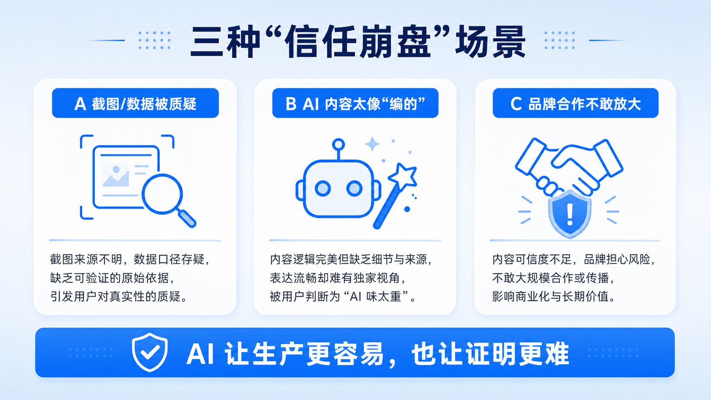
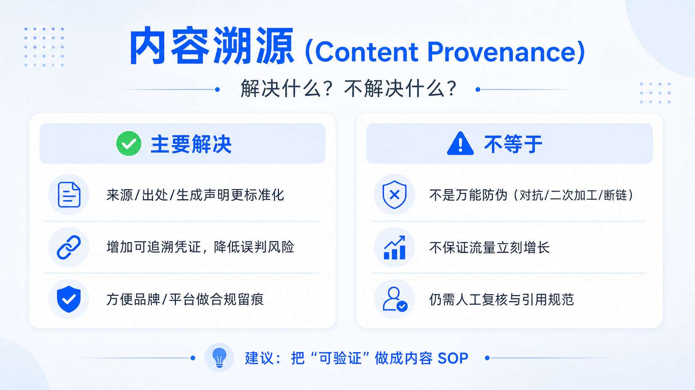
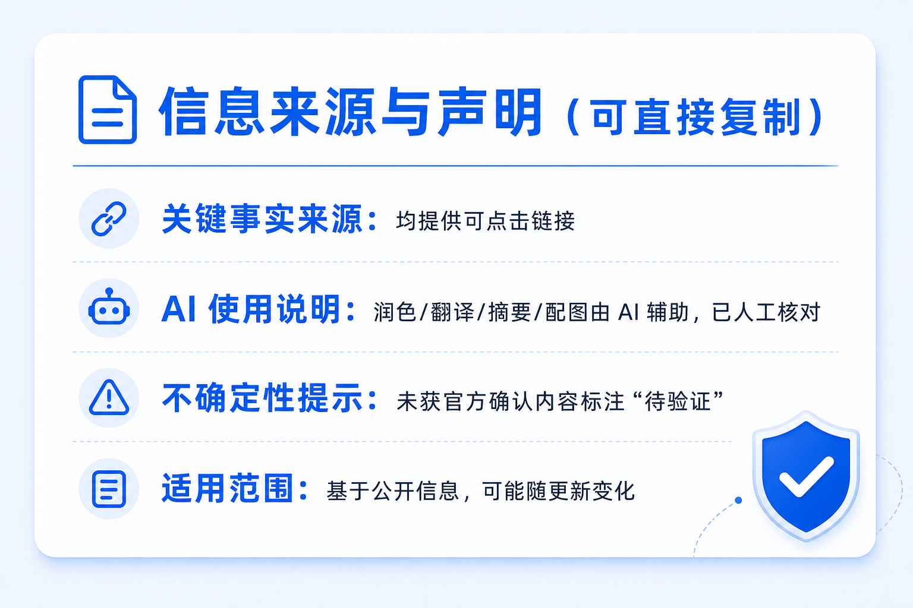
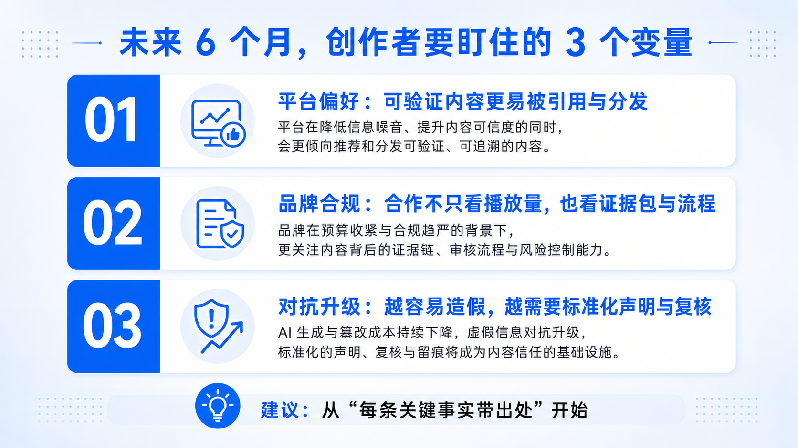

内容溯源时代来了：AI 自媒体如何做“可验证内容”，提升信任与变现？
面向：科普/资讯/商业解读创作者 · 品牌合作型账号 · 知识付费从业者
核心观点：把“可信度”当作新的流量与转化杠杆。爆点：AI 时代的“内容身份证”。
2026-05-21 · 可直接发布稿
01 你可能已经遇到的 3 种“信任崩盘”场景
场景 A：
截图/数据被质疑“造的吧？”（评论区第一句话：来源呢？）
场景 B：
AI 生成内容太像“编的”，观众默认你在胡诌。
场景 C：
品牌合作不敢放大传播：无法证明出处与链路。
一句话总结：
AI 让“生产内容”更容易，也让“证明内容可信”更难。

02 内容溯源解决什么？不解决什么？
你可以把它理解成：为内容附上一条“可追溯的证据链”，让平台、品牌、观众更容易判断内容从哪里来、经历过什么处理。
主要解决：
来源/出处/生成声明更标准化、更可验证
增加可追溯凭证，降低被误判为造谣的概率
帮助品牌/平台做风险评估与合规留痕
不等于：
不是万能防伪：对抗样本、二次加工、断链都会影响效果
不是“有了就必然涨流量”：更像提高被信任/被引用/被合作的概率

参考（官方）：
https://openai.com/index/openai-content-provenance/
03 5 步“可验证内容”工作流（SOP）
这 5 步做成固定 SOP：评论区质疑少、合作沟通顺、内容复用效率高。
采信：
只拿可追溯的一手材料
引用：
每条关键事实都带可点击出处
标注：
把生成/改写/合成说清楚
留痕：
保存证据包（链接/快照/截图/版本）
复核：
发布前 3 分钟最低成本校验
04 声明模板（可直接复制）
信息来源与声明
- 关键事实来源：本文引用的官方公告/论文/媒体报道均提供可点击链接。
- AI 使用说明：本文的（润色/翻译/摘要/配图）由 AI 辅助完成，作者已进行人工核对。
- 不确定性提示：对于尚未获得官方确认的信息，本文已标注“待验证”，并会在后续更新更正。
- 适用范围：本文观点基于（日期）公开信息，可能随产品更新发生变化。

05 未来 6 个月要盯住的 3 个变量
平台偏好：
“可验证”可能成为默认偏好，被引用与分发概率提升
品牌合规：
合作不只看播放量，也看你的证据包与流程
对抗升级：
越是造假容易，越需要标准化声明、证据与复核

参考来源（可引用）
OpenAI：Content Provenance
https://openai.com/index/openai-content-provenance/